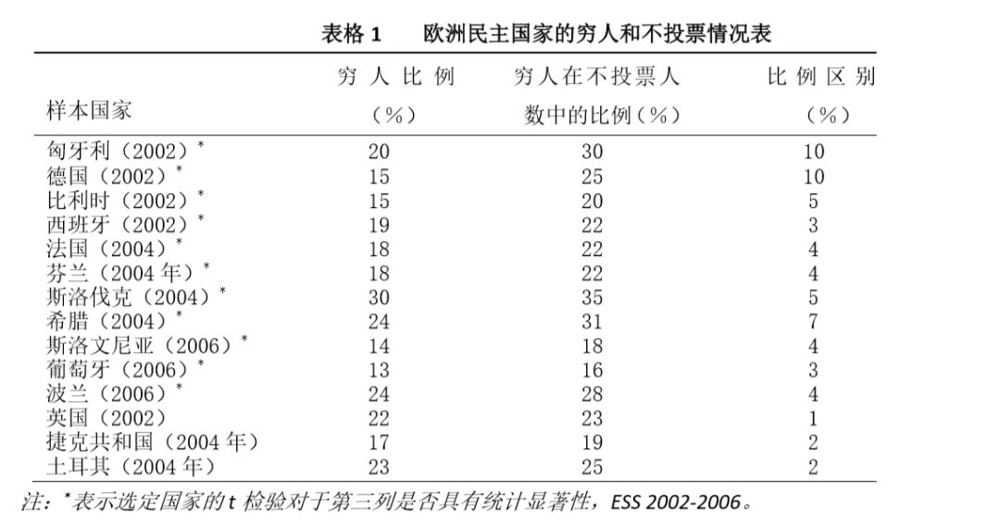
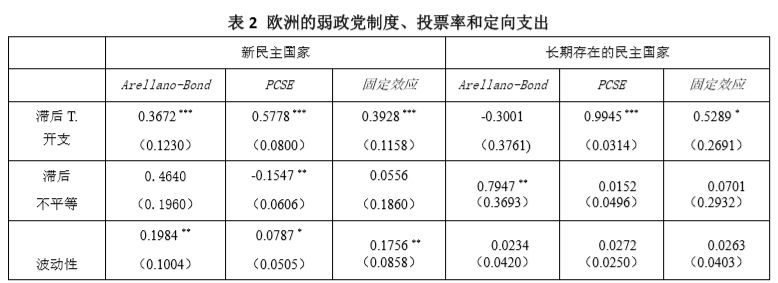
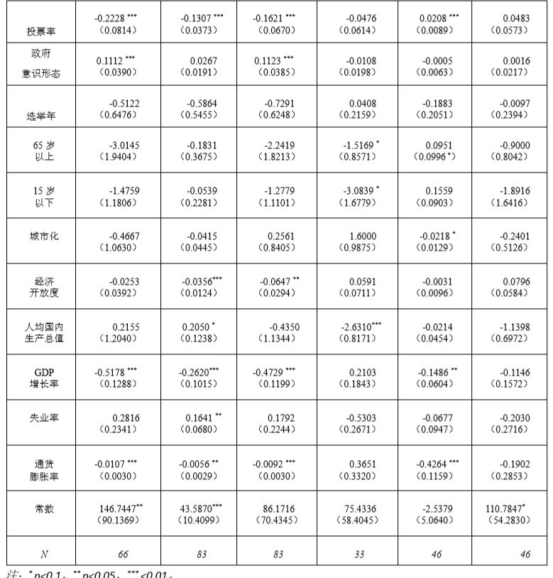
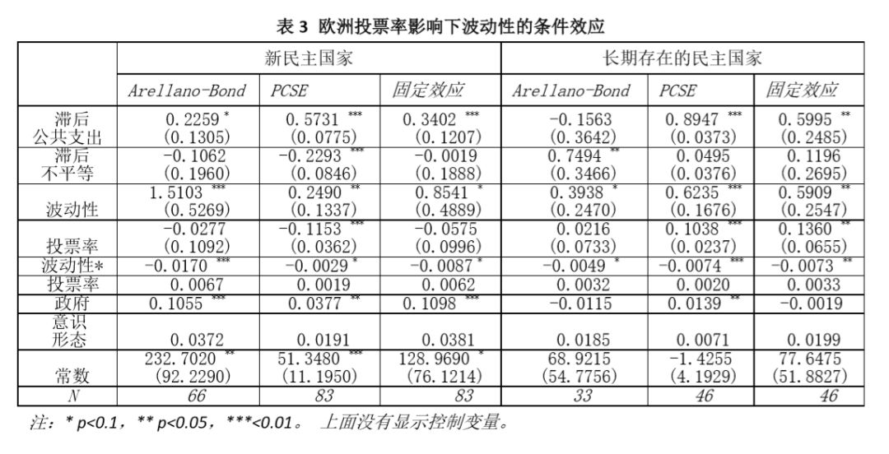
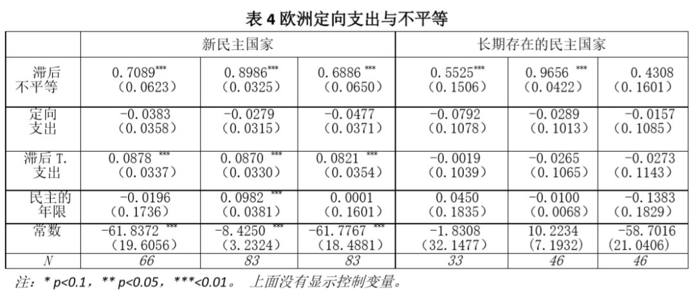

收录于合集
提 要： 本文的研究试图阐明欧洲新民主国家在向民主过渡之后经济持续不平等的原因和方式。作者认为，在新民主国家，民主并不会减少不平等，因为在高度动荡的选举环境中，政党的制度化程度较低，而穷人的投票率不高。所以执政党为了赢得选举，利用再分配的公共政策为其核心选民和投票率高、能提供资源支持的组织化公民社会团体谋福利，而忽视穷人的利益。本文采用大N跨国分析的方法，对欧洲31个民主国家进行实证分析，分析的结果验证了作者所提出的理论构想。作者挑战了民主会减少不平等的学界主流观点，并提出“中间选民”理论的修正版——“中间可能选民”理论，以便更好去解释新民主国家的再分配政治。
关键词： 民主 不平等 收入差距 再分配
作者： 艾克瑞姆.卡若克（Ekrem Karakoç），美国宾厄姆顿大学政治学系副教授，专注比较政治经济与民主化研究。
译者： 蔡金花，武汉大学政治与公共管理学院博士研究生。
译文简版刊于《国外社会科学》2019年第1期，第139-144页。
民主能否减少收入差距？政治经济学的主流研究认为，民主要对大多数人负责，民主应该带来更大的收入平等。弱势群体在民主国家中有更大的发言权，因为他们可以将其数量的多数变成政治优势，从而要求实现再分配。然而，有几项研究却发现，从专制政体过渡到民主政体之后社会支出显著增加。这些研究的基本假设是：社会支出增加到了多数人那里（主要是穷人），因为民主国家的领导人需要比专制国家的领导人需要更大的联盟以获胜，从而选择公共政策来换取他们赢得选举的筹码。
然而，本文的研究却表明，尽管有这样的理论预期，新民主国家在转型之后并不具有显著的减少收入不平等的能力。实践经验观察结果表明，欧洲大多数新民主国家都保持着原先的不平等水平，甚至随着时间的推移不平等水平还有所增加。为什么一些新民主国家难以产生收入平等？民主的多数主义和再分配特征是民主理论的核心。基于Meltzer- Richards模型，Acemoglu、Robinson等学者，以及Bueno de Mesquita等人的观点，向民主过渡应该需要对富人增加税收，从而实现更公平的分配，以增加普通公民的福利。
那么，为什么一些新民主国家反而会促进不平等呢？有学者对现有的民主与不平等关系理论持怀疑态度，但他们并没有形成明确的理论解释。与民主应该改善穷人的生活和减少不平等的预期相反，本文的研究揭示了新民主国家存在没有兑现其经济承诺的现象，并试图去解释其中原因。
本文研究提供了一个新的理论来解释为什么新民主国家没有坚持现有文献中的主流观点，即民主能减少不平等的观点，并将其应用于欧洲新民主国家的研究当中。本文的理论是基于以下两个相互关联的论点：由于在选举过程中穷人的低参与度，以及新民主国家的政党弱制度化，使得执政党在进行国内资源分配过程中牺牲了穷人的利益。这是因为，在新民主国家，自专制政权时期起，公民社会团体与执政者（针对现任政府而言）或反对派组织（针对前任专制政府而言）之间存在着动态联系。这些公民社会团体包括诸如工会、商会、专业组织等有着很强组织能力的团体。他们与执政者关系密切，这让这些组织团体有更多的影响力。他们通过物质刺激政府，使得政府推行有利于他们的社会政策。穷人缺乏公民社会所需的各种能力，而政党对高投票率的社会团体的依赖程度又进一步增强，这使得分化的社会政策有益于富人阶层。这反过来又导致了高水平的“定向”支出，对收入平等产生了负面影响。
我使用面板数据（panel- data）对欧洲16个新民主国家和15个长期民主国家进行了分析，分析的结果验正了我的论点。强有力的证据表明，新民主国家的低投票率和政党制度的脆弱增加了定向支出，定向支出反过来又降低了经济平等。我还发现，高投票率可以减轻选举波动对定向支出（targeted spending）的负面影响。
本文研究的意义在于：首先，它有助于我们理解民主和不平等之间的关系。对政治经济学文献中关于选民投票率和稳定的政党制度化的假设理论进行了重新考虑。本文修改了这些假设，并提出了新版本的中间选民理论（Median Voter Theory）——中间可能选民理论（Median Likely Voter Theory）。其次，强调和分析了新民主国家政党制度波动的影响，说明了高度波动如何导致更多不会减少经济不平等的定向性社会政策。最后，综合了研究民主化、社会政策、收入不平等和政党体系制度化的相关文献，来解释为什么向民主过渡会导致更大的不平等。
一、 民主与不平等
再分配是政党追求最大化选举机会时所使用的政策工具。它通过税收和社会政策的形式把资源从高收入群体向低收入群体转移。政党是执政者和选票追求者，为了赢得选举，他们作出选举承诺。这一过程导致了他们倾向中间选民（median voter）的政策主张。平均收入（mean income）和中间收入（median income）之间的差异决定了再分配的水平。如果中间选民的情况相对较差，那么政党则倾向于分配更多资源给中间选民，以缩小差距。唐斯（Downs）再分配理论的后期发展在于：以中间选民的均衡为基础，运用他的分析模型来解释民主政权和专制政权在分配和收入不平等方面的差异。其论点的前提在于：首先，专制领导人需要精英阶层的支持，他们需要满足精英的利益以维持权力。这使得他们不太关心穷人的福祉。其次，与专制政权不同的是，民主国家坚持多数主义。这意味着要掌权，他们需要在议会中占多数。因此，民主国家的执政党将收入低于平均收入的中间选民作为目标，并为之争取更多的再分配资源。这应该促使政党实施更多旨在缩小中间收入（median income）和平均收入（mean income）之间差距的再分配政策。向富人征更多的税，以重新分配给穷人。由于这种再分配政策，民主国家才可能产生减少不平等的预期。
笔者对31个新民主国家和已建立的民主国家从1975年到2005年基尼系数进行了对比。对比的结果表明新民主国家中不平等的增长情况非常严重。新民主国家在转型年和转型完成后的那年（2005年）之间的不平等平均增长大约为7.2分，已建立的民主国家的增长大约是1.2分。与已建立的民主国家相比，新民主国家的不平等分值增加了一倍以上。由此可以看出，新民主国家之间的平均不平等程度显著增加，这违背了民主应该减少不平等的传统期望。我们需要对这个差异进行解释。
二、 中间选民与中间可能选民
本文认为中间选民理论提出了一个重要的但有限的框架来解释政党如何在新民主国家运作。传统理论首先假定存在所有人都投票的正态分布，认为重新分配有利于中下阶层。在收入差距悬殊的国家，中间收入与平均收入之间的差距更大，对再分配的需求会更高。在所有人投票的假设下，政党将制定社会政策，以回应处于中间收入水平的选民的再分配要求。
与中间选民理论中的假设相反，在新民主国家和长期存在的民主国家进行的调查表明，与中上阶层相比，穷人在选举中投票的可能性较小，从而对执政精英施加的压力较小。比拉梅迪（Beramendi）和安德森（Anderson）在对经合组织国家的研究中表明，中等收入以下的选民选举弃权率非常高。学者Goodin和Dryzek也指出，不平等与选民投票率之间存在着负相关关系。其他学者，例如马勒（Mahler）、肯沃西（Kenworthy）和蓬图松（Pontusson）等，也持类似观点。他们认为选民投票率不成比例的下降来自穷人的退场，而资源的下降又进一步削弱了穷人的组织和动员能力。
由于穷人的低投票率是这一理论的重要组成部分，而且没有关于新民主国家穷人投票率的经验数据，所以我使用了2002年至2006年间进行的三次欧洲社会调查（ESS）的所有数据来进行测试，分析这些国家的穷人和富人在投票率上是否存在差别。我之所以选择ESS，是因为它对各个国家采用了同样的调查方法，这让我可以容易地对调查结果进行比较。
表1显示了在使用所有“欧洲社会调查”（2002 - 2006年）的数据后，不论是新民主国家还是长期存在的民主国家，都存在穷人以及他们不同程度的弃权现象。由于空间的缘故，我只展示选定的国家。鉴于调查的性质，不能得出最低收入五分之一的确切数值。因此，我选择了近似收入五分位数的最低收入群体的百分比。然后我计算了这个群体的弃权率。百分比的差异表明，穷人的弃权率在各国有所不同。从表中还可以看到，与富人相比，穷人是否存在不成比例的弃权行为。随后的t结果表明，除了英国、土耳其和捷克共和国，无论是新民主国家还是长期存在的民主国家，穷人都占不投票人数的很大部分。
如果我们考虑收入群体的投票概率，可能选民（Likely voters）的相关人数将会更加充裕。考虑到穷人和拥有较强组织能力的群体的投票水平的差异，我的新中间选民理论是关于社会支出分配更现实的版本之一。中间（可能）选民的政策偏好更有利于富裕的选民。他们属于对政党有着强大影响力、有组织力量的群体。随着选举的穷人代表性减弱，富人通过投票和选举之外的游说等活动增加对政府的影响力，从而减少了收入的再分配。

其次，中间选民理论假定执政党对重新分配给有组织的公民社会团体没有偏好。政党发现，以历来支持政党的和更有可能投票的人群为目标更为有效。这一理论忽略了政党和工会、专业团体、小企业主等这些公民社会组织团体之间的先前关系，这可能会遗漏专制主义时期的遗产。在专制时代，执政精英通过团结不同的有组织团体来巩固政权，而亲民主联盟则通过与各种有组织的团体形成结盟来挑战专制政权。这就不足为奇，掌权后的政党通过优先这些组织团体的社会政策，以获得他们的继续支持。
最近的研究也证明，公民社会的强势群体利用与政党正式和非正式的联系，对政府政策施加更大的影响力。考夫曼（Kaufman）认为，民主授权于中产阶级和工人阶级等有组织的群体，而这些群体并不总是倾向于将资源转移给穷人。此外，先前和现有的劳动力市场的内部人士都赞成把无组织的在职穷人和无业穷人从分配方案中排除出去。包括工会在内的各个职业团体的代表，他们努力保持养老金和其他社会政策所带来的福利，在损害大众利益的情况下，与雇主和政府合作。
经验观察也为这种解释提供了支持。在西班牙和土耳其等地，公共部门的白领和蓝领雇员（如军人或公务员），由于政府招聘方式的支持，他们在社会保障体系中享有优先地位。由于其组织实力而被作为政权的重要支柱，也因此他们成为这些政权中社会政策的主要受益者。 在拉丁美洲：
社会保障计划最初是为特权群体（军队，警察，司法，公务员）建立的，后来扩展到重要白领（教师，银行雇员）和蓝领（矿工，铁路工人，港口工人）类别，最后到一般的正式员工。
第三，中间选民理论假定政党存在并运作在一个稳定的政党制度之中。选民可以收集有关政党政策立场的信息，而反对党有相对稳定的选民基础。对于长期存在的民主国家来说，情况确实如此。但大多数新民主国家的政党都是在高度动荡的选举环境中运转。这增加了政党为了选举目的而利用社会政策的可能性。
与发达民主国家相比，新民主国家的政党制度往往波动很大。已建立民主制度的国家，其政党建立在上世纪社会政治的分裂之上，已趋于稳定。政党制度的稳定性在各地区的波动分数中是可见的。1885年至1985年期间，本项研究的13个西欧国家的平均波动率是8.6%，而这个比率在70年代和80年代只增加了10%左右。拉丁美洲80年代的波动率是这个比率的两倍，后共产主义地区在90年代达到28.2%，拉美国家的波动比率高达37.2%。
波动对于政党制度的动态（dynamics）具有重要影响。在低度波动的政党体系中，政党是建立在深刻的社会分裂之上、具有稳定性的选举组织。与现有政党已经磨炼了几十年并建立了一党政府或长期联盟的发达国家不同的是，新民主国家的政党在政府和议会中的存活率很低。与英国、德国相比，新民主国家的执政党频繁更替并不少见，并且还很难预测哪一政党将组建政府。在1945年到1995年期间，欧洲长期存在的民主国家有48％的政党获得连选连任，而拉丁美洲只有32％的政党在此期间获得连选连任。后共产主义国家中在1991年至2006年期间只有16％的政党实现了连选连任。这说明政党在新民主国家竞争的条件颇为不同，即使在位者也面临着生存挑战。
三、波动对社会支出和不平等的影响
社会政策的高度波动性会产生一些影响。首先，波动性给执政党带来了选举的不确定。为了在这样一个动荡不安的政党制度中生存下去，政治家们更有可能借助政策工具来实现选举机会的最大化。在大多数情况下，用社会政策来获得自己党派选民的支持是远远不够的。这就是为什么政党也把那些并非其权力基础的必要组成部分、但组织良好的公民社会团体的成员作为争取的目标。他们为那些关心社会政策并且投票可能性很高的社会团体制定政策。例如，公共部门的白领雇员和蓝领工人，他们作为新民主国家的主要组织团体，已经成为许多政党的争取对象。政党通过不断增加职业替代率或促使其他社会政策变化来争取选民。总之，为了增加信誉和继续执政，把社会政策扩展到核心支持者和（潜在）支持者是他们所拥有的最重要的策略方针之一。
其次，学者Bawn和Rosenbluth认为，“长期”联盟组成的单一党派政府和“短期”联盟组成的多党派政府具有不同的选举问责机制。
__
政党一方面最大限度地为提高支持其团体的福利做边际贡献，另一方面又使支持它的团体不承担成本，使得成本外部化。政府中政党的短期联盟与长期联盟谈判效率较低，因为政策决定反映了最关心政策领域的联盟伙伴的偏好，使得原本处于单一政党统治的政府内部成本外部化。
因此，与一党政府相比，多党派政府的公共支出更高，即使这两个政府都代表同一个群体。与长期存在的民主国家相比，新民主国家的政府和（或）政党更替频率高。这缩短了政策的寿命，并导致他们在制定社会政策时，优先考虑历来投票率高的群体的边际收益，这些群体主要包括组织化的公务员、公司员工、工人、小店主等。与德国和瑞士这些长期存在的民主国家相比，新民主国家联合政府的寿命缩短，政党有着更大的压力将公共资源分配给联盟伙伴的主要支持者。总而言之，随着政党制度的波动加剧，政党更可能偏离惠及穷人的纲领性政策，并倾向于其选民基础和具有较高组织能力、有可能帮他们赢得选举的群体。
选民的低投票率和政党制度高波动性，两者影响了社会支出的使用，使社会受益比例相对较小。因此，我的预期是，投票率越低、波动越大会导致更多的定向支出。如果政治权力与支持执政党的团体规模相联系，那么政党就需要向这些团体转移一些资源，以维持并增加他们的选民基础。如果这些组织是某一党派选举的基础，那么拟议的政策应该涵盖这一组织的利益，如果可能的话还应包括其他潜在组织的利益。正如我上面所讨论的那样，穷人的投票记录、政党之间的联系、现有组织和选举的高度不确定性，使穷人在分配国内资源中处于不利地位。由于教育和卫生等非定向支出资源被削减或针对穷人的定向支出被削减，这些群体的社会流动将是一件很困难的事情。政府倾向于忽视穷人，他们的政策有利于那些组织良好的群体，我预计有更高的定向支出（targeted spending）。随着定向支出水平的提高，再分配的低效率将加剧新民主国家的收入分配不平等。
四、 数据和方法
我选取欧洲作为这一理论的检验场所。之所以选择欧洲主要有以下三个原因。首先，自1974年以来，这个地区的国家民主化比例很高，其中大多数国家在转型后都仍然保持民主政体。这使我们能够沿着定向支出和不平等的路径进行研究。其次，欧洲的新民主国家允许我们进行跨国家的异质性观察。该地区包括几乎同时开始民主化的国家。样本中的新民主国家在1974年至90年代初期进行了转型。最后，该地区为我的变量提供比任何其他地区更好的数据。本文的分析涵盖了从1974年到2005年间这些国家的民主转型。
五、变量选取
模型中包括定向支出和不平等两个变量。 但定向支出也是不平等模型中的一个关键自变量。我的两个主要自变量是投票率和选举波动性。主要的因变量是基于基尼系数中可支配收入来衡量的收入不平等。收入不平等数据来自标准化世界收入不平等数据库（SWIID 1.1）。SWIID的优势在于它的资料的全面性和对基尼系数的样本归纳。这些样本包括后共产主义地区在内的临时的地域性国家。在样本中，最低基尼分数是22.5（斯洛文尼亚），最高分是43.6（俄罗斯）。高分代表更大的经济不平等。
我们通过公共资金支出（public cash spending）占所有社会支出的百分比来计算定向支出水平。所有的社会支出是指公共资金支出（如养老金、失业、生育、儿童福利和与职业有关的福利），教育支出和健康医疗支出之和。使用公共资金支出做这代理的原因在于这些支出的性质。公共资金支出是竞选活动中最突出的问题之一，但是倾向于绝大部分在正规劳动部门工作的那些人。另一方面，教育和卫生保健支出在覆盖方面更为全面。在选取的样本中，所有社会支出中有一半以上（56％）的支出为定向支出，其数据范围从最低的32%到最高的73%之间。综合现有的研究成果，我认为，支出的即刻影响将不会太明显，但对公共资金的滞后影响存在于各国之中。因此，我使用了滞后定向支出（lagged targeted spending）这一概念。
除各种控制变量外，我的两个主要自变量是投票率和政党制度的波动性。投票人数与可以投票人数的比例来自IDEA。各个国家综合投票率的平均值是70.7，范围从41％（2006年的波兰）到93％（1990年的捷克共和国/斯洛伐克）。
“波动”是政党制度稳定性的有效测量工具。Pedersen指数是最常用的衡量制度化的指数，是党派之间的选票或席位转移的百分比，是党派之间投票份额（百分比）绝对差额之和的一半。0分表示没有政党失去或获得席位，100分表示没有现有政党获得席位。在计算波动率变量时，我追溯到了联盟的形成以及政党的合并和解散。数据集的平均波动率得分为23分，最高得分为1999年俄罗斯的52.1分，最低分为1990年希腊3分。
在构建这两个模型的过程中，我使用了一组标准的控制变量。研究社会支出和不平等的文献使用了许多相同的控制变量，如全球化、经济水平、绩效以及一些政治变量。因此，我的不平等模式也将依赖于定向支出模式中所使用的许多相同控制变量。考虑到空间的限制，不可能分别讨论它们对定向支出和不平等的影响。对于定向支出模型，控制变量包括滞后的目标支出、滞后的不平等、政府的意识形态、选举年、65岁以上的人口占比、15岁以下人口占比、城市化、经济开放度、人均GDP、失业率和通货膨胀率。
对于不平等模型，除了使用一些与定向支出模型相同的变量外，不平等模型包括滞后定向支出、女性就业率、人均GDP和平方（库兹涅茨曲线模型）、GDP增长和民主政权的年限。这些变量的数据来源各不相同。左-右的政府意识形态数据来自宣言项目数据库。经济变量（人均GDP、GDP增长率、经济开放度（进出口总额除以某个国家的GDP）、城市化水平、通货膨胀率、失业率、女性就业率）来自“世界发展指标”。
六、方法
大N分析的数据结构是时间序列的横截面。由于缺乏数据可用性，我的数据范围是从1980年到2003年31个国家的数据。数据结构受到异方差和序列相关性的影响。独立的、同样分布的错误标准回归假设不可能成立。初步分析也表明，实际上存在异方差（Breusch- Pagan检验）和自相关。
学者Beck和Katz认为，面板校正的标准误差可以校正面板的异方差性和空间上同时性的自相关性。此外，可以考虑跨面板的序列自相关问题的一阶自相关。然而，在这种方法中，使用滞后因变量会导致内生性问题。滞后的因变量也会与滞后的经济和政治变量相关联，从而造成偏差。此外，通用的价值观念可能会导致滞后值的内生性。
为了纠正这种内生性问题，异质性和自相关性，我们转向使用广义矩方法的Arellano- Bond估计，该方法利用工具变量和一阶差分来呈现定向社会支出和不平等模型。对于稳健性检验，我运用了面板校正的标准误差和具有滞后因变量的固定效应进行分析。我在分别介绍Arellano- Bond模型的结果之后，再分别讨论了这两种替代模型的结果。
七、结果
我将首先介绍定向社会支出模型，然后是不平等模型。前者的调查结果显示，随着穷人参与度的增加，波动性降低了定向支出比例。不平等模型表明，定向支出增加了新民主国家之间的收入差距。总的来说，结果证实了我的理论预期。
把定向支出百分比作为因变量，Arellano- Bond模型显示在表2中。大体而言，选民投票率增加10％会导致定向支出下降2.2％。至于第二个自变量，选举波动的影响在统计上是显著的。这个变量的系数为0.2，这意味着选举波动性增加了10个百分点，定向支出增加了2个百分点。政党制度的任何重大变化，会导致目标支出增加约8％，如波兰在2005年的选举中波动大约40％。
对于新民主国家来说，政府的意识形态（“党派”变量）是与定向支出相关的另一个因素。结果表明，右翼政府倾向于增加定向支出，而左翼政府倾向于增加非定向支出。这与库克（Cook）和奥伦斯坦（Orenstein）一致。他们认为，波兰和匈牙利的左派政府增加了对低收入群体的支出。这挑战了学者Lipsmeyer认为立法机关的政党意识形态并不重要的观点。得出这样的结论可能是由于她自己对意识形态的编码问题，或者是她只看到了立法机关中政党的意识形态的稳定性一面。结果也质疑了学者Letki关于后共产主义欧洲国家右翼政府增加政府、教育和医疗保健开支的观点。他们的发现可能是由于没有区分定向开支和非定向开支，或者两者之间比例的缘故。
 
至于经济变量，我发现失业对定向开支有显著的正向影响。这表明政府更关心先前和现在的劳动力市场内部人士，喜欢减少教育和卫生方面的开支。经济增长和通货膨胀对定向支出也有减弱的作用，但逻辑上可能有所不同。虽然经济增长可能会增加所有群体的社会支出资源（特别是对穷人而言），但通货膨胀可能会降低社会资源转移的价值。与非定向支出相比，通货膨胀对养老金和失业津贴等定向支出的影响更大。
模型中的其他因素对因变量也有微弱的影响。我发现年轻人（十五岁以下）和老年人口（六十五岁以上）的比例、城市化程度、经济发展水平和贸易开放程度对新民主国家定向支出的影响微不足道或不一致。我的样本大部分是中等收入国家，城市化和经济发展水平的差异并不大。这可以解释为什么这些变量的系数没有统计的意义。
为了检验波动性是否受投票率水平的影响，我在表3中创建了一个交互变量。我假设一个波动较大、投票率较低的国家将会受益更多的参与度较高的组织团体。然而，投票率上升，这意味着以前低动员的群体（如穷人）将参加选举，迫使当事方转向扶贫的立场。调查结果支持我的假设：选民投票率的水平会缓和波动对定向支出的影响。
我的理论认为，高度波动是新民主国家所独有的特征，它对社会政策有着重大的影响。为了确定这是否属实，我只对西欧进行了类似的分析。对于长期存在的民主国家而言，我认为波动性不是一个问题。由于政党制度化程度较高，波动率分数变化较小。正如表2的右边所显示的，对于长期存在的民主国家来说，投票率和波动对定向支出没有统计上的显著影响。与长期存在的民主国家相比，新民主国家的政党在高度不稳定的选举环境中运作，社会政策被狭隘地运用。控制变量对长期存在的民主国家的定向支出的影响各不相同（由于空间有限，表中未显示。）65岁以上的人口比例会增加定向支出，15岁及以下的人口比例则减少定向支出。至于其他变量，除了人均GDP以外，其余经济和政治变量的系数在统计上并不显著。
如表3所示，似乎投票率也会缓和波动对长期存在的民主国家定向支出的影响。交互变量的解释是棘手的。新民主国家和长期存在的民主国家的交互变量在统计上是显著的。然而，这提出了一个问题：波动对定向支出的影响是否取决于欧洲所有民主国家的选民投票率。为了使交互变量的解释更容易些，我使用grinter命令绘制了图3中因变量的边际效应。[]我先呈现新民主国家的结果，再呈现长期存在的民主国家的结果。

选民投票率会缓和波动。当把50％的选民投票率转到72％的平均投票率时，波动的边际效应从0.7%降到0.3％左右。波兰投票率的边际效应在0.7左右。而向捷克、西班牙和土耳其转移后会发现，这些国家的投票率远远高于波兰。波动性的减弱效应一直持续到选民投票率达到79％左右。在此之后，波动率对目标支出的边际效应变得模棱两可，斜率的置信区间说明了这一点。不过，仍然有些国家的投票率超过了80％。在接近理想的情况下，所有选票都会减少定向支出，虽然幅度不大。
长期存在的民主国家也得出了类似的数字。即使波动性和投票人数对于独立的定向支出没有统计上的显著影响，交互模型也表明波动性影响有条件地取决于选民投票率水平。然而，置信区间表明，投票率对波动的边际效应不明确；可能是积极的影响，也可能是消极的影响。换而言之，我们无法为长期存在的民主国家找到支持的结果。
八、收入不平等模型
表4显示了我使用的三种统计技术所建立的收入不平等模型的结果。总体来说，调查结果支持定向支出对平等有不利影响的理论。定向支出在统计上显示了不平等的滞后影响。而定向支出的直接影响是积极的，但统计上不显著。在控制其他变量，定向支出的增长会增加不平等。定向支出增长了1个百分点，不平等将增加0.09个百分点。如果增长了12%，那么不平等的变化就是1%。结果证明了我的理论。
表4还列出了长期存在的民主国家模式相同。调查结果显示，纳入（滞后的）定向支出对这些工业化民主国家的不平等没有统计意义。这可能是因为劳动力市场覆盖率高，而且公共资金支出通过养老金、失业和其他福利覆盖大部分人口。另外，这些国家的初等教育和中等教育水平都很高，这表明每个人都受益于定向支出。总的来说，这些结果支持了我的观点，即对新兴民主国家不平等的研究必须考虑定向支出的增加。
对于长期存在的民主国家来说，只有落后的不平等对不平等水平产生持续的显著影响。其他变量不显示重大影响（这里没有展示）。另外，结果表明通货膨胀和城市化加剧了不平等。经济增长则可以减少不平等。随着经济表现的改善，我们可能会看到它对新兴民主国家的收入分配产生积极的影响。根据库兹涅茨曲线，新民主国家经济发展对不平等的影响呈曲线状。
民主年限对不平等的影响很小。女性就业率对不平等具有统计显著性和正向影响。这个意外的发现可能是由几个原因造成的。首先，女性参加劳动增加了公共现金支出，例如养老金、失业、产假和儿童福利。其次，结果可能受南欧等部分地区的国家驱使。在南欧，特别是在20世纪70年代末和80年代，女性就业率很低。而处在转型初期的那些后共产主义国家，女性就业率较高。最后，女性单亲家庭增多和女性工资的下降可能会导致新民主国家更加不平等。

九、稳健性检验
为了进行稳健性检验，我使用面板校正的标准误差和固定效应估计运行模型。结果表明，这个发现对于其他两种估计技术而言是稳健的。表2包括这两个交替模型，其中我的两个主要变量波动率和投票率在统计上显著。在所有的三种模型中，波动率和投票率为p≦0.1，结果都很显著。滞后的定向支出和通货膨胀是我发现另外两个持续减少定向支出的变量。在这两种模式中，经济开放度与定向支出有着显著的反向关系。
对于长期存在的民主国家，我发现选民投票率在面板修正后的标准误差模型中仅在统计上显著，而且令人惊讶的是，它对定向支出有着积极影响。于是，我得出了这样的结论：虽然波动对新民主国家的社会政策有重大影响，但欧洲长期存在的民主国家并未受到影响。这证实了新民主国家在定向支出上显示出不同决定因素的观点。
对于交互效果，我进行了一些分析。如表3所示，交互变量对面板校正标准误差（pcse）和固定效应模型均有统计上的显著影响。两个模型中，波动率变量在定向支出上具有一致的显著效应。而仅在（pcse）模型中，投票率具有统计显著性。然而，当我计算边际效应时，长期存在的民主国家的可信区间同时落在正面和负面的区域，这表明效果是模棱两可的。总体而言，如结果所示，长期存在的民主国家的高投票率并不能缓和波动的影响。
对于不平等模型，我运行了pcse和固定效应模型。在Franzese之后，我使用了一个滞后的不平等变量来处理这两个模型的内生性。这一发现表明，上述结果在这两种技术上是稳健的，表明滞后的不平等变量对不平等有积极影响。
十、结论
本文的研究试图阐明欧洲第三波民主国家在向民主过渡之后经济持续不平等的原因和方式。本文采用大样本跨国分析的方法，研究结果强力支持了该理论，并说明了欧洲新民主国家无法产生收入平等的机制。对学界而言，有以下几个贡献。
首先，理论和实证结果挑战了民主会减少不平等的传统理论。这些研究的基本假设是，穷人在选举过程中会有更多的发言权，迫使当事人重新分配资源给他们，直到实现中间收入向平均收入靠拢。然而，这些理论无法理解新兴民主国家的再分配政治，中间选民理论需要被修改完善。我的实证研究结果也让我对布埃诺德梅斯基塔等人的观点持怀疑态度，即从专制政权向民主政权过渡，由于增加了选举权和获胜联盟，将导致更高水平的公共产品。我也反对Boix认为民主带来了更多的公共预算作为对大众公共产品和政策的需求回应。模型研究结果表明，公共部门更关心为富人制定和执行政策。穷人政治的低参与度扭曲了新民主国家的公共政策。但是，如果穷人动员起来并参与其中，情况可能有所不同。这样即使在极端不稳定的选举环境下，也能实现对穷人公共政策再分配的转移。
其次，本项研究改进了Meltzer和Richard提出的中间选民理论，它为认识新民主国家的再分配提供了一个更现实的图景。本研究认为，中间选民理论忽略了历史、意识形态和公民社会组织化的利益团体与政党之间的组织联系。
第三，这项研究丰富了由基弗尔（Keefer）、卡普斯坦(Kapstein)和匡威(Converse)以及罗宾斯(Robbins)发起的讨论，认为新民主国家的政治领导人的信誉问题是一个主要问题。这将促使公共政策处于从属被利用的地位。
这项研究也有助于最近关于欧洲养老金计划的研究。尤其是类似林奇（Lynch）在欧洲的研究。林奇（Lynch）发现劳动养老金体系有助于民主国家中碎片化和特殊化的社会政策项目的实现。由于东欧和前苏联的共产主义遗产和南欧国家主义的经济政策，劳动社会保险计划一直是社会政策的重要组成部分。在过渡期之后，社会政策继续赋予一些有着良好组织的劳动部门特权。而且因为提前退休或提高某些职业的替代率，这种情况变得更加严重。
正如罗伯茨所述，在选举中缺乏有特色的政党宣言，使得社会政策处于从属地位，被用作重要工具，用来争取另一党派的选民。政党选民基础的日益趋同，对公民福利和民主质量有一定影响。我的研究结果一定程度上支持了学者Bernhardt、Duggan和Squintani最近的一项研究。他们认为，政党选民基础的趋同减少了选民的福利，而分歧可以增加福利。本文研究发现政党选民基础的趋同，会增加有组织的公民社会团体的福利和政党核心支持者的福利，但对穷人来说却不是这样。
总之，本研究揭示了新民主国家出现了不平等这一令人费解的趋势，并提出了新的理论来解释这一趋势。本文分析仅限于欧洲，因为欧洲是唯一拥有众多持续民主制度的国家的地区。这里提出的理论，特别是组织化的公民社会团体与政党、选举波动之间的关系，可能也适用于其他新民主国家。
译文全文已经译者授权刊发！
编辑：吴温泉